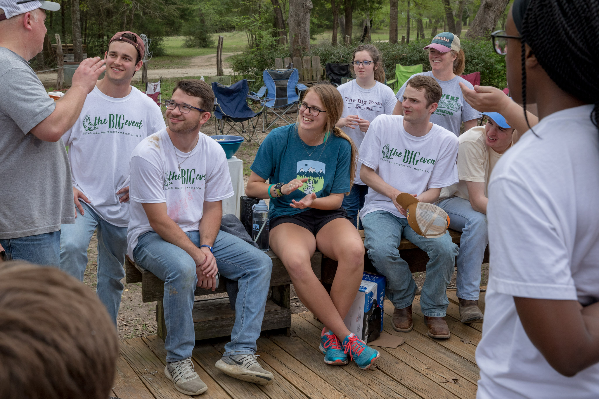

Big Event is the largest one-day, student-run service project in the nation. It is organized
by Texas A&M University students.
During the Big Event, I worked with the Aggie Magic Circle to help a farmer in Bryan and
College Station community move soil and fertilizers and then to disperse them over the
field.
Here is an image from the Gallery of the Big Event Website:

On First Fridays (an event in Bryan downtown on the first Friday of every month), I
perform
magic to entertain the Bryan-College Station community. This helps me build my
public
speaking skills while also allowing me to help bring some joy into the BCS
community.
Here is a video of me performing magic at First Friday.